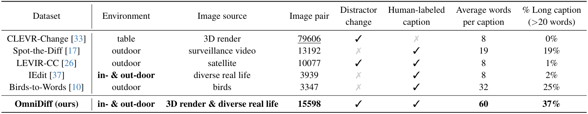

Method and Dataset
- Dataset of OmniDiff we collected is available on HuggingFace.

Image Difference Captioning (IDC) aims to generate natural language descriptions of subtle differences between image pairs, requiring both precise visual change localization and coherent semantic expression. Despite recent advancements, existing datasets often lack breadth and depth, limiting their applicability in complex and dynamic environments: (1) from a breadth perspective, current datasets are constrained to limited variations of objects in specific scenes, and (2) from a depth perspective, prior benchmarks often provide overly simplistic descriptions. To address these challenges, we introduce OmniDiff, a comprehensive dataset comprising 324 diverse scenarios—spanning real-world complex environments and 3D synthetic settings—with fine-grained human annotations averaging 60 words in length and covering 12 distinct change types. Building on this foundation, we propose M3Diff, a MultiModal large language model enhanced by a plug-and-play Multi-scale Differential Perception (MDP) module. This module improves the model's ability to accurately identify and describe inter-image differences while maintaining the foundational model's generalization capabilities. With the addition of the OmniDiff dataset, M3Diff achieves SOTA performance across multiple benchmarks, including Spot-the-Diff, IEdit, CLEVR-Change, CLEVR-DC, and OmniDiff, demonstrating significant improvements in cross-scenario difference recognition accuracy compared to existing methods. The dataset, code, and models will be made publicly available to support further research.
@article{liu2025omnidiff,
title={OmniDiff: A Comprehensive Benchmark for Fine-grained Image Difference Captioning},
author={Yuan Liu and Saihui Hou and Saijie Hou and Jiabao Du and Shibei Meng and Yongzhen Huang},
journal={International Conference on Computer Vision (ICCV)},
year={2025}
}